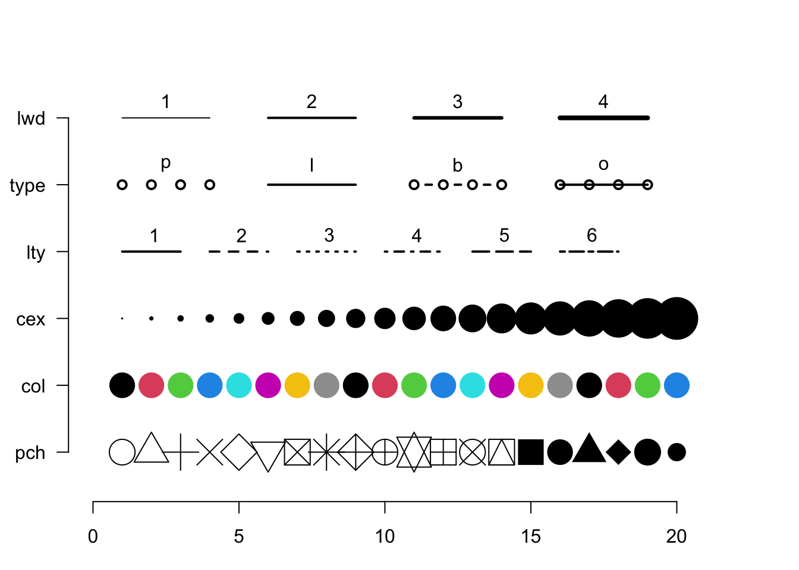
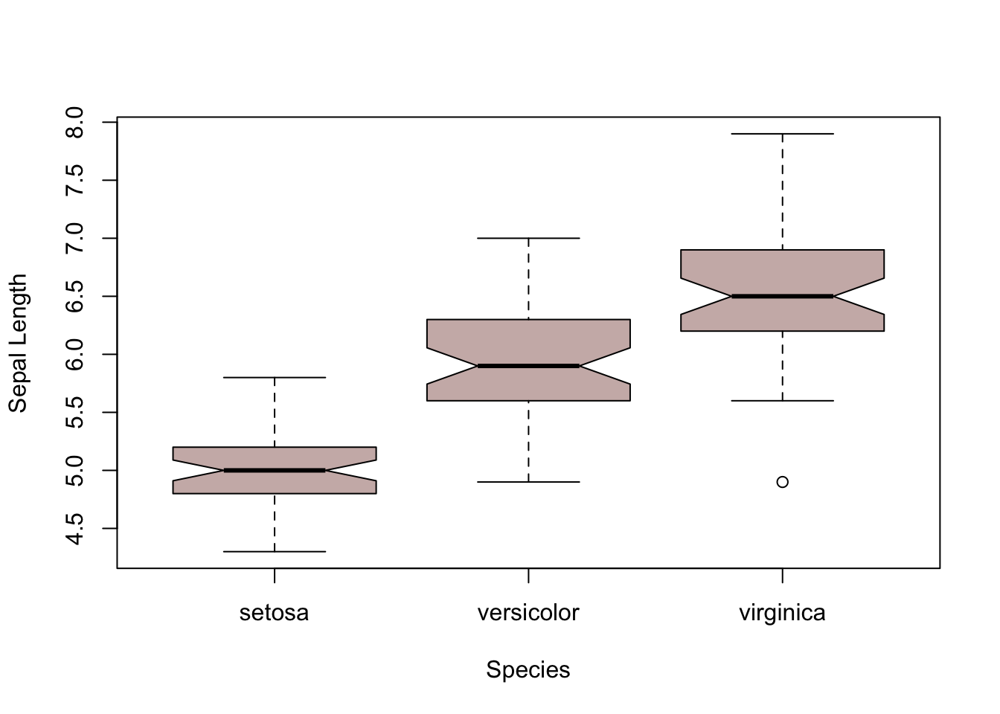

Data visualization is key to providing effective communication of your data.
The Data
The iris flower data set (also known as Fisher’s Iris data set) is a multivariate data set introduced by the British statistician, eugenicist, and biologist Ronald Fisher in his 1936 paper entitled, The use of multiple measurements in taxonomic problems as an example of linear discriminant analysis.
These data are part of the base R distribution and contain sepal and pedal measurements for three species if congeneric plants, Iris setosa, I. versicolor, and I. virginica.
The three species of iris in the default data set.
Here is what the data summary looks like.
summary(iris)
Sepal.Length Sepal.Width Petal.Length Petal.Width
Min. :4.300 Min. :2.000 Min. :1.000 Min. :0.100
1st Qu.:5.100 1st Qu.:2.800 1st Qu.:1.600 1st Qu.:0.300
Median :5.800 Median :3.000 Median :4.350 Median :1.300
Mean :5.843 Mean :3.057 Mean :3.758 Mean :1.199
3rd Qu.:6.400 3rd Qu.:3.300 3rd Qu.:5.100 3rd Qu.:1.800
Max. :7.900 Max. :4.400 Max. :6.900 Max. :2.500
Species
setosa :50
versicolor:50
virginica :50
The base R comes with several built-in plotting functions, each of which is accessed through a single function with a wide array of optional arguments that modify the overall appearance.
Histograms
hist( iris$Sepal.Length)
You can see that the default values for the hist() function label the x-axis & title on the graph have the names of the variable passed to it, with a y-axis is set to “Frequency”.
xlab & ylab: The names attached to both x- and y-axes.
main: The title on top of the graph.
breaks: This controls the way in which the original data are partitioned (e.g., the width of the bars along the x-axis).
If you pass a single number, n to this option, the data will be partitioned into n bins.
If you pass a sequence of values to this, it will use this sequence as the boundaries of bins.
col: The color of the bar (not the border)
probability: A flag as either TRUE or FALSE (the default) to have the y-axis scaled by total likelihood of each bins rather than a count of the numbrer of elements in that range.
Call:
density.default(x = iris$Sepal.Length)
Data: iris$Sepal.Length (150 obs.); Bandwidth 'bw' = 0.2736
x y
Min. :3.479 Min. :0.000148
1st Qu.:4.790 1st Qu.:0.034088
Median :6.100 Median :0.153218
Mean :6.100 Mean :0.190407
3rd Qu.:7.410 3rd Qu.:0.378921
Max. :8.721 Max. :0.396476
The density() function estimates a continuous probability density function for the data and returns an object that has both x and y values. In fact, it is a special kind of object.
class(d_sepal.length)
[1] "density"
Because of this, the general plot() function knows how to plot these kinds of things.
plot( d_sepal.length )
Now, the general plot() function has A TON of options and is overloaded to be able to plot all kinds of data. In addition to xlab and ylab, we modify the following:
col: Color of the line.
lwd: Line width
bty: This covers the ‘box type’, which is the square box around the plot area. I typically use bty="n" because I hate those square boxes around my plots (compare the following 2 plots to see the differences). But you do you.
xlim & ylim: These dictate the range on both the x- and y-axes. It takes a pair of values such as c(min,max) and then limits (or extends) that axis to to fill that range.
Scatter Plots
Plotting two continuous variables
plot( iris$Sepal.Length, iris$Sepal.Width )
Here is the most general plot(). The form of the arguments to this function are x-data and then y-data. The visual representation of the data is determined by the optional values you pass (or if you do not pass any optional values, the default is the scatter plot shown above)
Parameter
Description
type
The kind of plot to show (’p’oint, ’l’ine, ’b’oth, or ’o’ver). A point plot is the default.
pch
The character (or symbol) being used to plot. There 26 recognized general characters to use for plotting. The default is pch=1.
col
The color of the symbols/lines that are plot.
cex
The magnification size of the character being plot. The default is cex=1 and deviation from that will increase (\(cex > 1\)) or decrease (\(0 < cex < 1\)) the scaling of the symbols.
lwd
The width of any lines in the plot.
lty
The type of line to be plot (solid, dashed, etc.)

One of the relevant things you can use the parameter pch for is to differentiate between groups of observations (such as different species for example). Instead of giving it one value, pass it a vector of values whose length is equal to that for x- and y-axis data.
Here is an example where I coerce the iris$Species data vector into numeric types and use that for symbols.
We can use the same technique to use col instead of pch. Here I make a vector of color names and then use the previously defined in the variable symbol.
raw_colors <-c("red","gold","forestgreen")colors <- raw_colors[ symbol ]colors[1:10]
In addition to the general form for the function plot(x,y) we used above, we can use an alternative designation based upon what is called the functional form. The functional form is how we designate functions in R, such as regression anlaysis. This basic syntax for this is y ~ x, that is the response variable (on the y-axis) is a function of the predictor (on the x-axis).
For simplicty, I’ll make x and y varibles pointing to the same same data as in the previous graph.
y <- iris$Sepal.Widthx <- iris$Sepal.Length
Then, the plot() function can be written as (including all the fancy additional stuff we just described):
plot( y ~ x , col=colors, pch=20, bty="n", xlab="Sepal Length", ylab="Sepal Width")
This is much easier to read (also notice how I used serveral lines to put in all the options to the plot function for legibility).
Bar Plots
The barplot function takes a set of heights, one for each bar. Let’s quickly grab the mean length for sepals across all three species. There are many ways to do this, here are two, the first being more pedantic and the second more concise.
The iris data is in a data.frame that has a column designating the species. We can see which ones using unique().
A boxplot contains a high amount of information content and is appropriate when the groupings on the x-axis are categorical. For each category, the graphical representation includes:
The median value for the raw data
A box indicating the area between the first and third quartile (e.g,. the values enclosing the 25% - 75% of the data). The top and bottoms are often referred to as the hinges of the box.
A notch (if requested), represents confidence around the estimate of the median.
Whiskers extending out to shows \(\pm 1.5 * IQR\) (the Inner Quartile Range)
Any points of the data that extend beyond the whiskers are plot as points.
For legibility, we can use the functional form for the plots as well as separate out the data.frame from the columns using the optional data= argument.
To use these colors, you can specify them by name for either all the elements
boxplot( Sepal.Length ~ Species, data = iris, col = randomColors[1],notch=TRUE, ylab="Sepal Length" )

or for each element individually.
boxplot( Sepal.Length ~ Species, data = iris, col = randomColors[1:3],notch=TRUE, ylab="Sepal Length" )
Hex Colors: You can also use hexadecimal representations of colors, which is most commonly used on the internet. A hex representation of colors consists of red, green, and blue values encoded as numbers in base 16 (e.g., the single digits 0, 1, 2, 3, 4, 5, 6, 7, 8, 9, A, B, C, D, E, F). There are a lot of great resources on the internet for color themes that report red, green, blue and hex values. I often use the coolors.co website to look for themes that go well together for slides or presentations.
Color Brewer Finally, there is an interesting website at colorbrewer2.org that has some interesting built-in palettes. There is an associated library that makes creating palettes for plots really easy and as you get more expreienced with R, you will find this very helpful. For quick visualizations and estimation of built-in color palettes, you can look at the website (below).
or look at the colors in R
library(RColorBrewer)display.brewer.all()
There are three basic kinds of palettes: divergent, qualitative, and sequential. Each of these built-in palletes has a maximum number of colors available (though as you see below we can use them to interpolate larger sets) as well as indications if the palette is safe for colorblind individuals.
brewer.pal.info
maxcolors category colorblind
BrBG 11 div TRUE
PiYG 11 div TRUE
PRGn 11 div TRUE
PuOr 11 div TRUE
RdBu 11 div TRUE
RdGy 11 div FALSE
RdYlBu 11 div TRUE
RdYlGn 11 div FALSE
Spectral 11 div FALSE
Accent 8 qual FALSE
Dark2 8 qual TRUE
Paired 12 qual TRUE
Pastel1 9 qual FALSE
Pastel2 8 qual FALSE
Set1 9 qual FALSE
Set2 8 qual TRUE
Set3 12 qual FALSE
Blues 9 seq TRUE
BuGn 9 seq TRUE
BuPu 9 seq TRUE
GnBu 9 seq TRUE
Greens 9 seq TRUE
Greys 9 seq TRUE
Oranges 9 seq TRUE
OrRd 9 seq TRUE
PuBu 9 seq TRUE
PuBuGn 9 seq TRUE
PuRd 9 seq TRUE
Purples 9 seq TRUE
RdPu 9 seq TRUE
Reds 9 seq TRUE
YlGn 9 seq TRUE
YlGnBu 9 seq TRUE
YlOrBr 9 seq TRUE
YlOrRd 9 seq TRUE
It is very helpful to look at the different kinds of data palettes available and I’ll show you how to use them below when we color in the states based upon population size at the end of this document.
Plot Annotations
You can easily add text onto a graph using the text() function. Here is the correlation between the sepal length and width (the function cor.test() does the statistical test).
The we can the overlay this onto an existing plot. For the text() function, we need to give the x- and y- coordinates where you want it put onto the coordinate space of the existing graph.
plot( y ~ x , col=colors, pch=20, bty="n", xlab="Sepal Length", ylab="Sepal Width")text( 7.4, 4.2, cor.text )


 or look at the colors in
or look at the colors in